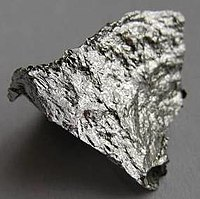

Numero atomico: 25
Massa atomica: 54,94
Temperatura di fusione (°C): 1244
Temperatura di ebolizione (°C): 2061
Energia di prima ionizzazione (kj/mol): 717
Elettronegatività (secondo Pauling): 1,55
Densità: 7,43
Numeri di ossidazione: +2+3+4+6+7
Configurazione elettronica: 1s2, 2s2, 2p6, 3s2, 3p6, 3d5, 4s2
Maggiori Informazioni